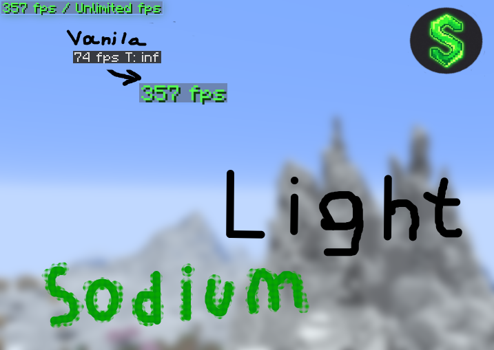

⚡ Key Features
- Sodium + Sodium Extra — ultimate OpenGL rendering
- Iris Shaders — full shader support (Complementary, BSL, etc.)
- Lithium, ModernFix, FerriteCore — logic and memory optimization
- Full mod compatibility, stable FPS

Lightweight Fabric modpack built around Sodium + Iris
